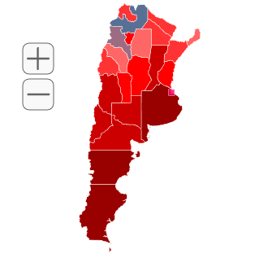

<section>
  
  <div class="project">
    
  <h4> Utilizando la <a href="https://www.datos.gob.ar/dataset/produccion-salarios-por-departamentopartido-sector-actividad/archivo/produccion_4652023c-4bf0-4eeb-8c83-ae0b2a3eaa2f"> 
    Base de Datos Publica</a> realice un grafico en forma de mapa con los salarios promedio correspondientes a cada provincia</h4>    
  
    
     
    
  <script type="text/javascript" src="mapdata.js"></script>		
  <script  type="text/javascript" src="countrymap.js"></script>


  </div>
  
      
  <div id="map"></div>
  
</section>
